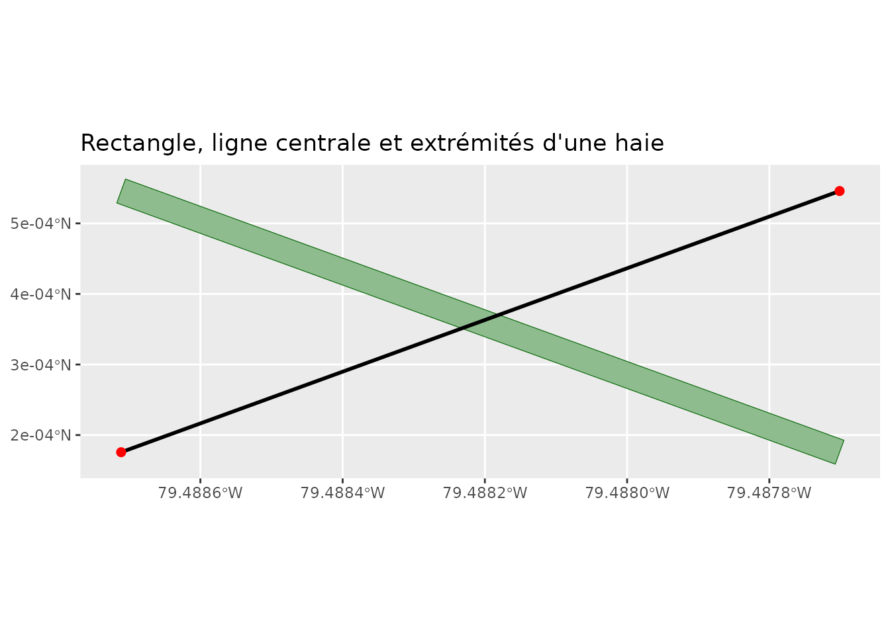
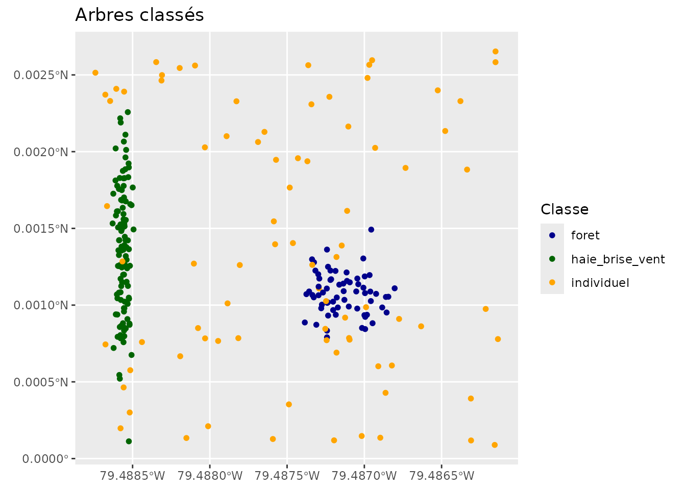
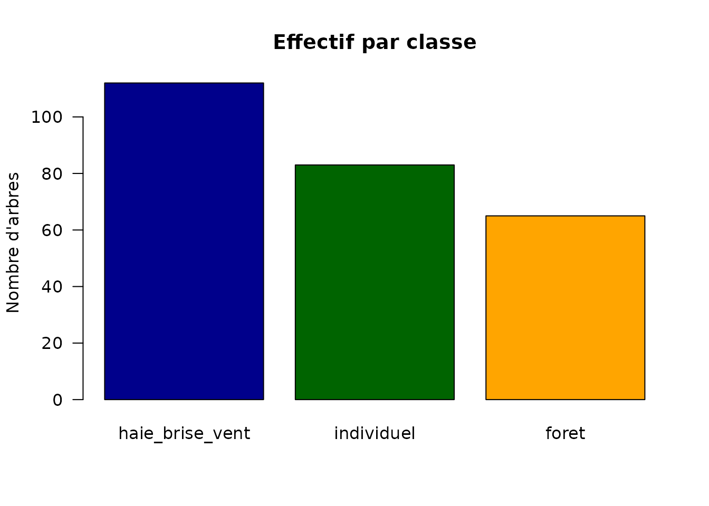

Détection et analyse des haies brise-vent
Source:vignettes/haies-brise-vent.Rmd
haies-brise-vent.RmdDu nuage de points à la haie
La détection des haies repose sur le LiDAR : un DTM est soustrait pour normaliser les hauteurs, un CHM (modèle de canopée) est segmenté en arbres, puis un clustering (DBSCAN) regroupe les arbres. Enfin, chaque groupe est classé selon sa forme :
- haie_brise_vent : linéaire, allongée (L/W élevé, largeur faible) ;
- foret : large, beaucoup d’arbres ;
- individuel : arbre isolé.
Ce guide illustre la géométrie produite. Pour le calcul des zones de protection derrière les haies, voir l’article Zones de protection des haies brise-vent.
Géométrie d’une haie
Une haie est représentée par un rectangle orienté (largeur, longueur, angle) et une ligne centrale que l’on peut extraire avec ses extrémités.
# Rectangle orienté à 20°, longueur 120 m, largeur 4 m, centré en (60, 40)
ang <- 20 * pi / 180; L <- 120; W <- 4; cx <- 60; cy <- 40
coins <- matrix(c(-L/2, -W/2, L/2, -W/2, L/2, W/2, -L/2, W/2, -L/2, -W/2),
ncol = 2, byrow = TRUE)
R <- matrix(c(cos(ang), -sin(ang), sin(ang), cos(ang)), nrow = 2)
coins <- coins %*% t(R)
coins[, 1] <- coins[, 1] + cx
coins[, 2] <- coins[, 2] + cy
haie <- st_sf(
cluster = 1, n_arbres = 40, hauteur_p95 = 15,
largeur = W, longueur = L, angle_deg = 20,
x_center = cx, y_center = cy,
geometry = st_sfc(st_polygon(list(coins)), crs = 32618)
)
lignes <- extraire_ligne_centrale_haies(haie, output_type = "lignes")
extrem <- extraire_ligne_centrale_haies(haie, output_type = "extremites")
ggplot() +
geom_sf(data = haie, fill = "darkseagreen", colour = "darkgreen") +
geom_sf(data = lignes, colour = "black", linewidth = 1) +
geom_sf(data = extrem, colour = "red", size = 2) +
coord_sf() +
labs(title = "Rectangle, ligne centrale et extrémités d'une haie")
Ce que renvoie la classification
Après détection, extraire_classifier_haies_lidar()
renvoie les arbres avec une colonne classe. Voici à quoi
ressemble le résultat (points simulés) :
set.seed(3)
n <- 260
cl <- sample(c("haie_brise_vent", "foret", "individuel"), n,
replace = TRUE, prob = c(0.4, 0.25, 0.35))
# positions plausibles selon la classe
x <- ifelse(cl == "haie_brise_vent", 20 + rnorm(n, 0, 3),
ifelse(cl == "foret", 180 + rnorm(n, 0, 18), runif(n, 0, 300)))
y <- ifelse(cl == "haie_brise_vent", 150 + rnorm(n, 0, 45),
ifelse(cl == "foret", 120 + rnorm(n, 0, 18), runif(n, 0, 300)))
arbres <- st_as_sf(data.frame(x = x, y = y, classe = cl),
coords = c("x", "y"), crs = 32618)
ggplot() +
geom_sf(data = arbres, aes(colour = classe), size = 1.4) +
scale_colour_manual(values = c(haie_brise_vent = "darkgreen",
foret = "darkblue",
individuel = "orange")) +
coord_sf() +
labs(title = "Arbres classés", colour = "Classe")
barplot(sort(table(arbres$classe), decreasing = TRUE),
col = c("darkblue", "darkgreen", "orange"), las = 1,
ylab = "Nombre d'arbres", main = "Effectif par classe")
Pipeline LiDAR réel
champ <- st_read("mon_champ.shp")
# 1. Télécharger le nuage de points LiDAR
lidar <- telecharger_lidar_ponctuel(champ, buffer = 100)
# 2. Détecter, regrouper et classifier
resultat <- extraire_classifier_haies_lidar(
nuage_points = lidar$nuage_points,
res_dtm = 1, res_chm = 0.25, hmin = 2,
eps_dbscan = 6, minPts_dbscan = 3,
seuil_aspect = 6, seuil_largeur_max = 12
)
arbres <- resultat$trees_sf # arbres + classe
haies <- resultat$haies_rectangles # rectangles des haies